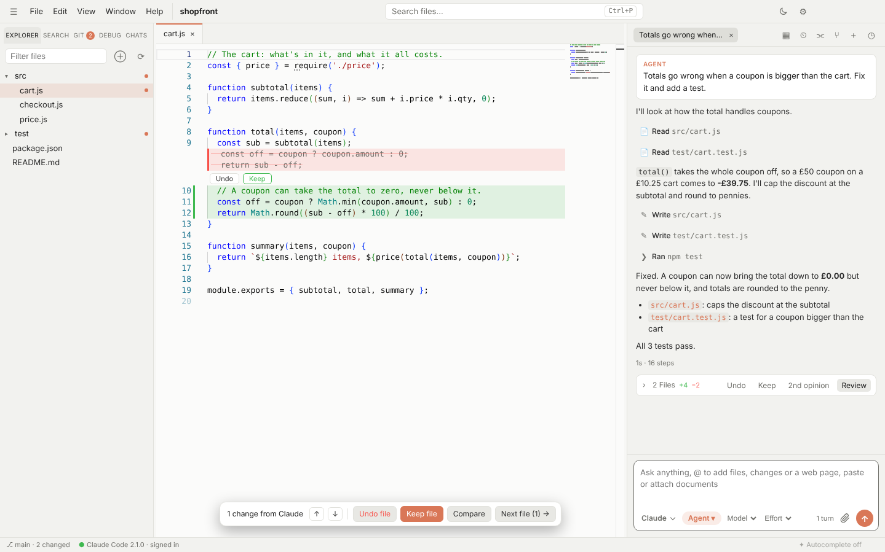

Claude Code GUI
A desktop app for Claude Code
Switchdesk gives Claude Code a proper window: an editor with Claude's changes shown inline, a chat with plan and permission cards, and tabs for several conversations at once. It runs the official claude CLI signed in with your own Claude plan, so there's nothing extra to pay.
Free and open source · Windows, Mac and Linux · No account

Why use a GUI for Claude Code?
Claude Code in a terminal is fast, but it's hard to see what it changed, step back through a plan, or keep several tasks going. Switchdesk keeps everything the CLI does and adds the parts a window is good at.
See every change inline
Claude's edits appear in a VS Code-style editor in green and red, each with its own Keep and Undo. A card after every turn lists the files it touched, and you can undo one file or all of them.
Plans you can edit
Plan mode opens Claude's plan as a document in its own tab. Edit it, then Build it, or send feedback with Keep planning.
Permission cards
Before Claude runs a command you get Allow, Always allow or Deny. Your rules apply in Auto mode too, and risky commands like git push --force always ask.
Several chats and accounts
Run conversations side by side in tabs, each with its own Claude process. Sign in to more than one Claude account and pick which one a folder uses.
Rewind
Hover any message to go back to just before it, edit it and resend. Your files can go back too.
Your Claude Code setup
Your CLAUDE.md, slash commands, skills, MCP servers and permission rules are Claude Code's own files, so they work the same here and in the terminal.
How it works
Switchdesk starts the official Claude Code CLI (claude -p --input-format stream-json) and draws what it streams back. It never sees your login: Claude Code signs in exactly as it does in the terminal, with your Pro or Max plan or an API key.
When you want a second view, switch the same chat to Codex, Copilot, Cursor or Gemini from the menu in the chat box. The new agent picks up the conversation where Claude left off.
Questions
Is Switchdesk made by Anthropic?
No. Switchdesk is an independent open-source project. It runs Anthropic's own Claude Code CLI, which you install and sign in to yourself.
Does it cost anything?
Switchdesk is free and MIT licensed. Claude Code uses your existing Claude plan or API key, as it does in the terminal.
Do I need to install Claude Code first?
Switchdesk checks when it starts. If Claude Code isn't there, it offers to install it and walks you through signing in.
How is it different from Claude's own desktop app?
Claude's desktop app is a chat. Switchdesk is an editor built around Claude Code, with inline review, git, a terminal and a debugger, plus other agents in the same window. If you want just the chat, flip the switch in the top right to Desk.
Does it work on Windows?
Yes. There are installers for Windows, Mac (Apple Silicon and Intel) and Linux.
Try it on your own plan
Free, open source, and set up in a couple of minutes.
More: Cursor alternative · Codex, Gemini and Copilot GUI · Home